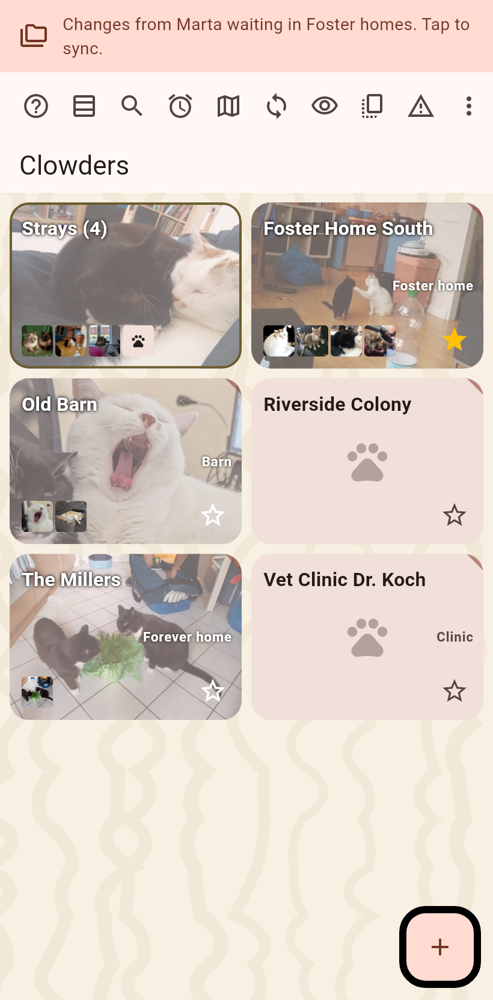

Everything the app has to say comes at the top of the screen, under the status bar: one note at a time, the page moving down under it, nothing at the bottom where the gestures and the keyboard are.

A note only says that a job finished, that it failed, or that changes wait. Tap a finished sync for what arrived, tap a failure for the cause, the full text and a Report button. Swipe left for the next note, swipe right to clear the news. A failure stays until it is swiped left or tapped; a finished job leaves after three seconds.
A thin line pulses with one icon per running job while a folder sync, an in-person sync, a backup or an archive runs.
Copied, recorded and cleared do not announce themselves: a green paw at the tapped button says it worked.